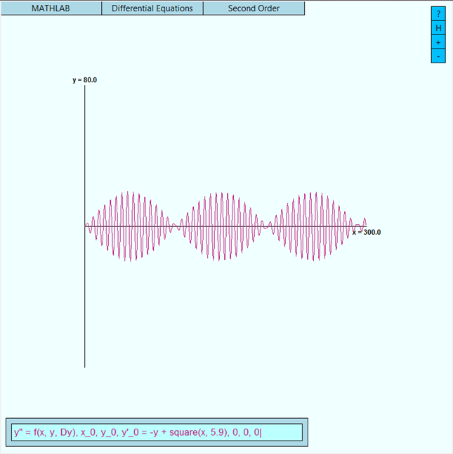

Xiong-Fei Du
About
MATHLAB (Mathematics Laboratory) is a non-CAS calculator originally developed in Spring 2016 as my term project for 15-112 Fundamentals of Programming and Computer Science at Carnegie Mellon University. MATHLAB was presented as a featured project in McConomy Auditorium on April 28, 2016.
MATHLAB is written in the Python programming language and uses its default graphics editor, tkinter. No external modules are utilized.
Features
- Friendly graphical user interface — you don’t need to know how to code.
- Graphing
- 3D graphing (Cartesian, Cylindrical, and Spherical Coordinates)
- 2D graphing (Cartesian and Polar Coordinates)
- Parametric Curves (2D and 3D)
- Vector Fields (2D and 3D)
- Differential Equations
- First-order ordinary differential equations (slope fields, initial value problems)
- Second-order ordinary differential equations (initial value problems)
- Calculator Functions
- Function analysis (zeros, local optimization)
- Calculus (limits, derivatives, definite integrals, double/triple integrals, vector calculus)
- Continuous probability (normal, Student’s t, exponential, gamma, beta)
- Discrete probability (binomial, negative binomial, geometric, Poisson, hypergeometric)
- Basic discrete math (factorial, permutation, combination, series, sequences)
- Statistics
- One-variable statistical analysis
- Two-variable regression analysis (linear, exponential, logarithmic, power, polynomial)
- Confidence intervals (z-interval, t-interval)
- PHYSLAB: The MATHLAB Physics Particle Simulator
- Simulates the motion of a particle given initial conditions and graphs it in 3D
- General forces (contact forces and field forces)
- Gravitational field
- Electric field, magnetic field
- Programming with MATHLAB
- Linear algebra library
- Heat equation and wave equation boundary value problem solver
Download
Interested in using MATHLAB? To download MATHLAB:
1. Install Python 3 here.
2. Download MATHLAB source code free here.
3. Run source code in Python.
MATHLAB is compatible with any operating system that Python 3 supports.
Find a bug in MATHLAB? Feel free to email me at xiongfed [AT] andrew.cmu.edu
Programming with MATHLAB
The latest version of MATHLAB, version 1.05, is written to be programmable so that you do not have to use the MATHLAB GUI. In other words, you can write your own code that runs MATHLAB. The full documentation of MATHLAB 1.05 with tutorials is here, and the source file to use for non-GUI programming is here.
Development
The original MATHLAB featured 3D and 2D graphing, first-order ordinary differential equations, the MATHLAB Calculator, and MATHLAB Statistics. Since then, additional features such as second-order ordinary differential equations, non-linear regression, and PHYSLAB have been added. Additionally, existing features have been improved to reduce computational error, and more precise algorithms have been implemented.
Updates
- MATHLAB 1.05 (29 May 2018)
- More bug fixes.
- Programmable MATHLAB non-GUI.
- MATHLAB documentation.
- Linear algebra toolkit.
- More statistics stuff.
- Polynomial regression.
- Functional programming implementation.
- Heat equation and wave equation boundary value problem solver.
- MATHLAB 1.04 (25 August 2016)
- Bug fixes, as always.
- Improvements in precision of various algorithms.
- Images for zeros, local minimum, local maximum finders.
- Exponential, logarithmic, and power regression analysis.
- More accurate solutions to the ordinary differential equation solver using the Runge-Kutta 4 method.
- PHYSLAB: the MATHLAB physics particle simulator.
- Input any forces, gravitational field, electric field, magnetic field.
- Give the particle a mass, charge, and initial condition.
- PHYSLAB will simulate the particle's trajectory using the Runge-Kutta 4 method and graph it in 3D.
- MATHLAB 1.03 (9 June 2016)
- Bug fixes.
- Common discontinuous functions.
- More accurate solutions to first order ordinary differential equations using Heun's method.
- Second-order ordinary differential equation solver (given initial conditions, of course).
- MATHLAB 1.02 (9 May 2016)
- Bug fixes.
Future of MATHLAB
I just released the latest version of MATHLAB, I’m not quite sure where I will continue to take MATHLAB. Nonetheless, I am looking into implementing eigendecomposition into the linear algebra library. However, these plans remain in their preliminary stages.
Gallery
… just a small subset of the full power of MATHLAB …

